Bienvenido/a a un espacio de resistencia
“Si quieres hacerte una imagen del futuro, imagina una bota aplastando una cara humana... eternamente.”
– George Orwell, 1984
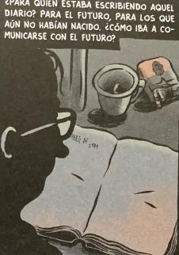
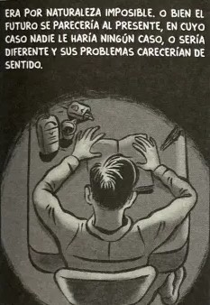
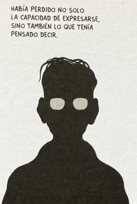
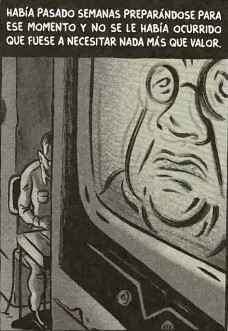
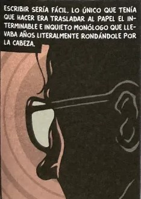
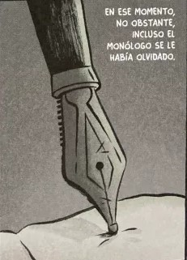
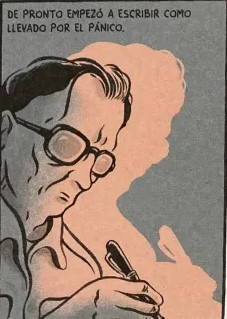
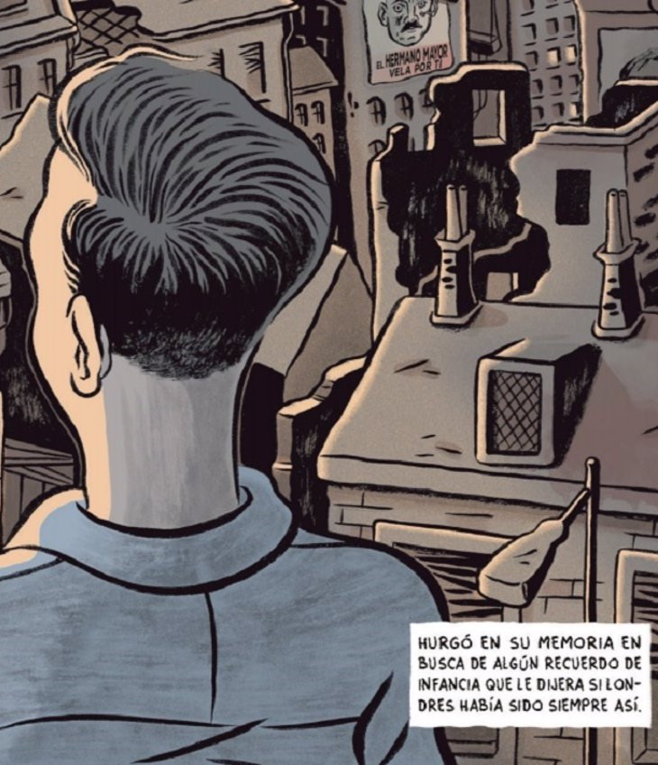
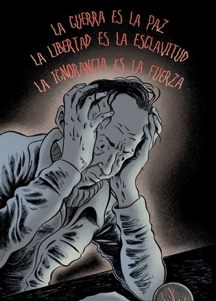
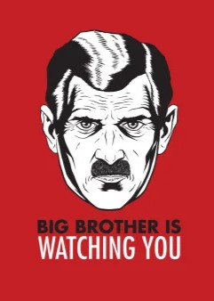
En un mundo donde la vigilancia es omnipresente y la verdad se desvanece bajo el peso del control, Ecos de 1984 nace como un refugio para el pensamiento libre. Inspirado en la novela distópica 1984 de George Orwell, este espacio explora cómo los temas de poder, manipulación y resistencia resuenan en nuestra realidad actual. Aquí encontrarás reflexiones que desafían la mirada del "Gran Hermano", invitándote a cuestionar, a dudar y a imaginar un futuro diferente.
Bienvenido y bienvenida a un espacio de resistencia.
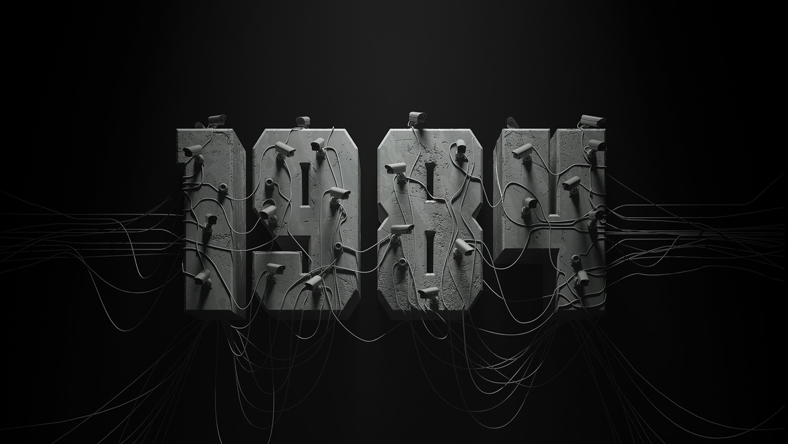